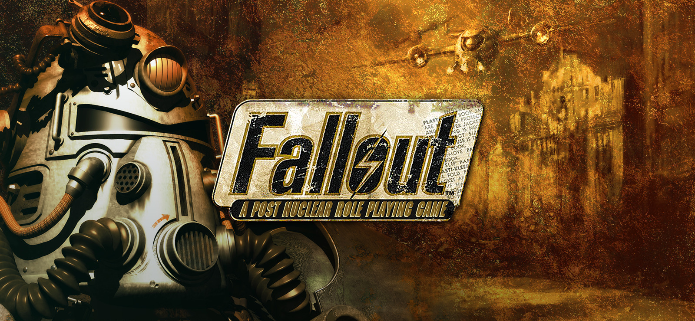

Fallout is a series of games and a TV Show set within a post-apocalyptic wasteland set after nuclear war.
The first game came out in 1997 with Fallout 1 and since then there has been 8 other games in the series with a TV Show that's currently in season 2
I first fell in love with the Fallout universe with Fallout: New Vegas which I consider the best in the series. I love the dark humor the series is known for, the gritty retro-futuristic world, and the amazing dialouge presented in both the games and the show.
In my top 5, I will be ranking what I believe the best entries into the series are based on their lore, gameplay, and atmosphere.
